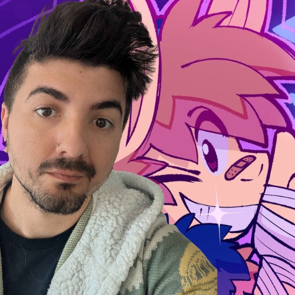

Justin East is a talented voice actor known for his lively characters and comedic range. He has always believed in the power of kindness and laughter. Raised in foster care, Justin’s early life was uncertain. A major change came when his mother regained custody after a long legal battle. Reunited, Justin was raised by his mother and her new husband, Will, who quickly became a father figure.
Tragically, when Justin was older, Will passed away after battling cancer. This loss had a profound effect on Justin’s outlook on life. It taught him the importance of resilience, compassion, and the need to pay kindness forward. Inspired by these values, Justin found his calling in Voice Acting and 3D Art. He uses his talent to bring joy and laughter to others.
Now living in Tennessee with his wife and two children, Justin continues to chase his dream of making the world a brighter place through his work. He is dedicated to creating characters that bring smiles to faces all over the world. He carries with him the lessons of love, family, and giving back. For Justin, each laugh shared is a tribute to the family that raised him and the kindness that changed his life.